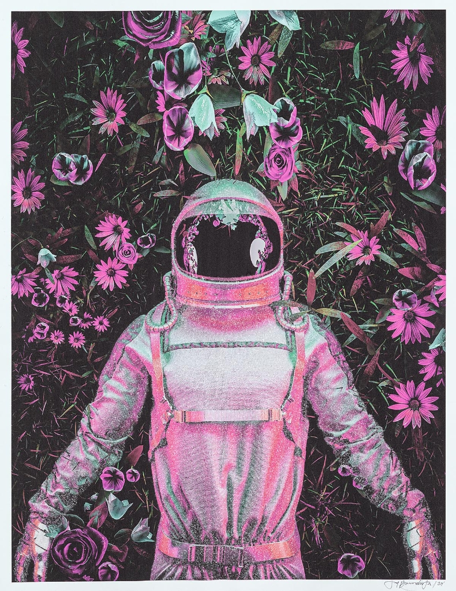

Astronut Field of Dreams – Maa

Description:
In “Astronaut Field of Dreams,” Jay Bonadio transports the explorer from the sterile vacuum of space to a lush, surrealist garden. This striking mixed-media work features an astronaut standing resolute amidst a dense, vibrant field of purple coneflowers, roses, and hanging bells.
The piece is a study in contrasts. The organic, printed background teems with life and color, setting the stage for the central figure—an astronaut rendered in Bonadio’s signature crushed glass and resin technique. The suit itself shimmers with an iridescent, pink-hued glow, absorbing the colors of the flora around it. This textured application gives the figure a heavy, tactile presence that stands out boldly against the flat, graphic nature of the floral backdrop.
The visor, typically a reflection of the cosmos, here becomes a void of deep black, perhaps reflecting the depth of the dreamscape the figure inhabits. “Astronaut Field of Dreams” invites the viewer to imagine a new kind of frontier—not one of distant stars, but of abundant, terrestrial beauty discovered in the most unexpected of places.
Artwork Details:
- Medium: Mixed Media, Crushed Glass, and Resin on Board
- Style: Pop Surrealism / Botanical Sci-Fi
- Key Elements: Iridescent pink suit, crushed glass texture, floral background
- Signature: Hand-signed by the artist (Bottom Right)
- Dimensions
- 35 in x 27 in
- Reg. / Lot No.
- 745425